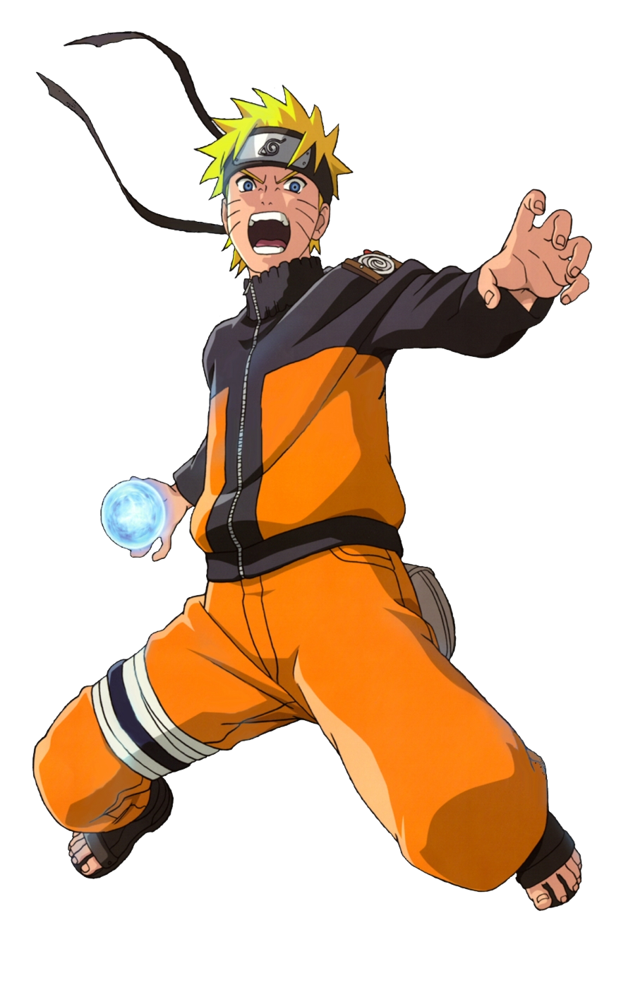
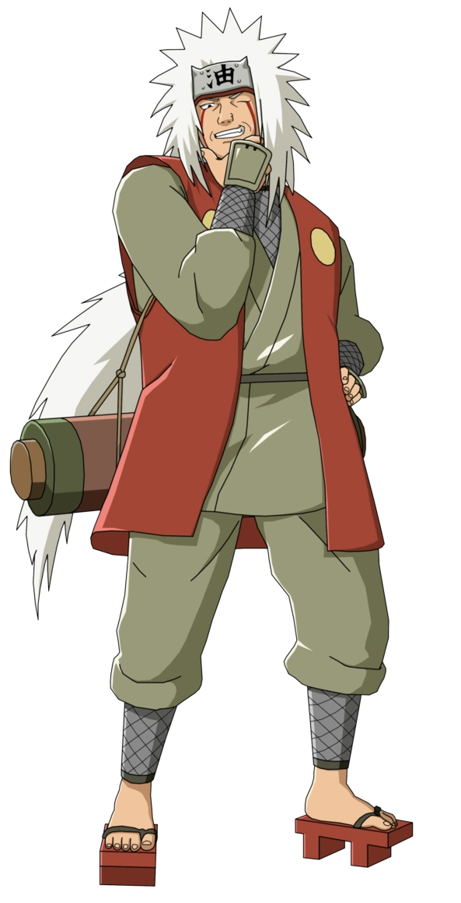
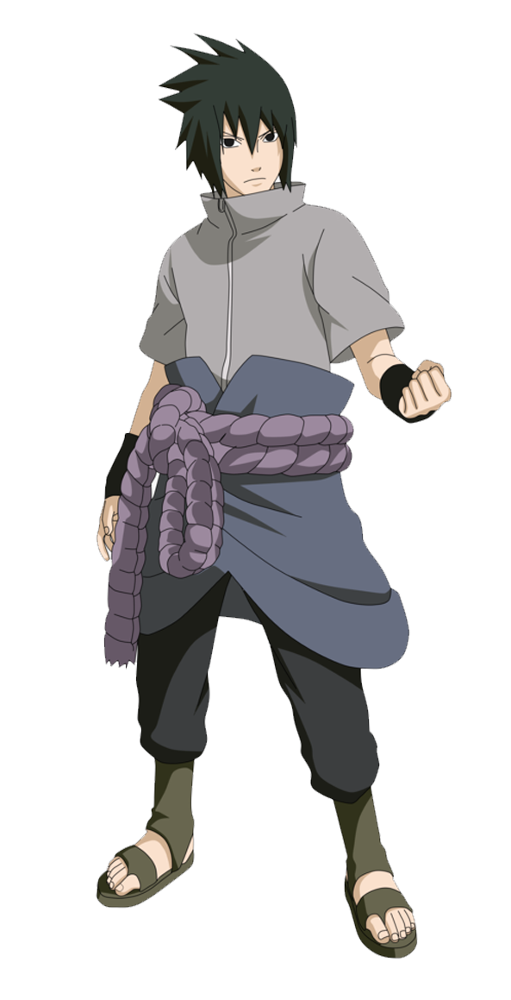
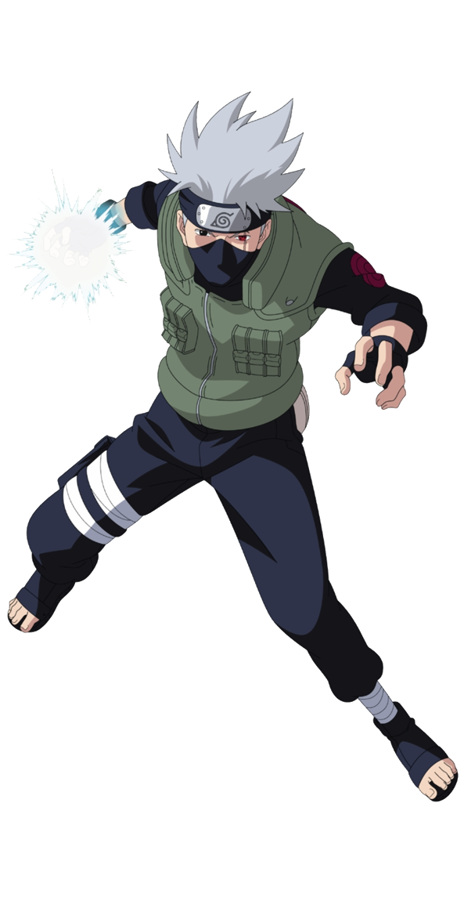

Naruto is a story about a boy, a resident of the Hidden Leaf Village, who witnessed pain since he was born and strives hard to achieve recognition in his own village by vowing to himself to become the village leader. He shares a friendly relation with another kid Sasuke who is a genius unlike him who wishes to avenge the death of his clan by killing his elder brother.
The first arc get over when Sasuke abandoned the Hidden Leaf village in order to grow stronger and Naruto vows to bring him back. At this time he finds out that an evil group Akatsuki is after him due to some evil spirit sealed inside him. This is where 'Naruto' ends as he leaves to train in order to become strong.
The event of Naruto Shippuden unfolds when this group makes its first appearance by kidnapping the leader of one of the 5 main villages in order to steal one of the 9 spirits that exist in the world.
As the story progress, Sasuke finally kills his brother only to find out that he was actually a spy who still was loyal to the leaf village. Feeling betrayed, Sasuke decides to destroy the village itself.
In the meantime disaster struck Naruto as his master Jiraiya is killed by the leader of the Akatsuki.
Soon the leader of the Akatsuki attacks leaf village in order to capture Naruto but is defeated. It is soon reveled that the mastermind pulling the strings behind Akatsuki is a legendary ninja, Madara Uchiha who challenges the leader of all the 5 great nations into a war which results in the Fourth Great Ninja War.
Soon Sasuke accepts the feeling of his brother and decides to support Naruto in the war. The story is moving towards its final phase where the combined forces of Naruto and Sasuke is battling against their final enemy Kaguya who defeated Madara.
Skills
TRANSFORMATION JUTSU
SUMMONING JUTSU
SHADOW CLONE JUTSU
RASENGAN
WIND RELEASE: RASENGAN
MINI RASENSHURIKEN
PLANETARY RASENGAN
SUPER MINI TAILED BEAST BALL
SAGE MODE
RASENSHURIKEN
KURAMA CHAKRA MODE
TAILED BEAST BALL
BIJUU MODE
TAILED BEAST BALL RASENSHURIKEN
SIX PATHS SAGE MODE

Friends

Jyraia Sensei
Jiraiya (自来也) is a fictional character in the Naruto manga and anime series created by Masashi Kishimoto. Introduced in the series' first part, he was a student of Third Hokage Hiruzen Sarutobi and one of the three "Legendary Sannin"—along with Orochimaru and Lady Tsunade, his former teammates. Jiraiya appears as a perverted old man who occasionally returns to the village Konohagakure, reporting the activities of Orochimaru and the organization Akatsuki. Referred to as the "Toad Sage" and "Pervy Sage", he mentors Fourth Hokage Minato Namikaze and later becomes the godfather and mentor of Minato's son, Naruto Uzumaki.
Jiraiya appears in two Naruto films, and he is a playable character in most of the franchise's video games. Various pieces of merchandise based on him have been released. The character has received positive critical reception and is considered one of the strongest in the series. Reviewers have praised Jiraiya's introduction in the story and his relation with Naruto as his mentor. Out of all student-teacher relationships in Naruto, Jiraiya and Naruto's is the one Kishimoto likes the most.

Uchiha Sasuke
Sasuke Uchiha (Japanese: うちは サスケ, Hepburn: Uchiha Sasuke) (/ˈsɑːskeɪ/) is a fictional character in the Naruto manga and anime franchise created by Masashi Kishimoto. Sasuke belongs to the Uchiha clan, a notorious ninja family, and one of the most powerful, allied with Konohagakure (木ノ葉隠れの里, English version: "Hidden Leaf Village"). Most of its members were massacred by Sasuke's older brother, Itachi Uchiha, before the series began, leaving Sasuke one of the few living. Despite becoming empathetic toward his teammates Naruto Uzumaki and Sakura Haruno, Sasuke's feelings of powerlessness force him to abandon his friends and his home in his quest to become stronger, and to find Orochimaru. Sasuke appears in several of the series' animated feature films and related media, including video games, original video animations (OVAs), and Boruto: Naruto the Movie (2015) and its manga sequel, Boruto: Naruto Next Generations (2016), in which he is depicted as a vigilante supporting his village and a mentor to Naruto's son Boruto Uzumaki.

Kakashi Sensei
Kakashi Hatake (はたけ カカシ, Hatake Kakashi) is a fictional character in the Naruto manga and anime series created by Masashi Kishimoto. In the story, Kakashi is the teacher of Team 7, consisting of the series' primary characters, Naruto Uzumaki, Sasuke Uchiha, and Sakura Haruno. He is initially portrayed as a detached and apathetic figure, but as the series progresses, his loyalty to his friends and students becomes increasingly apparent. Kakashi's past has been extensively explored in the series, resulting in a gaiden being devoted to his past experiences. Kakashi has appeared in several pieces of Naruto media, the featured films in the series, the original video animations, and the video games.
Kakashi was originally created by Kishimoto to be a harsh teacher but the author decided to avoid that. Instead, he made him more generous to calm his students in difficult situations to the point of giving him feminine traits. Kakashi's design gave Kishimoto difficulties as a result of having most of his face covered and as a result it was difficult to show his emotions. For the anime series, he is voiced by Kazuhiko Inoue in Japanese and Dave Wittenberg in the English dub.